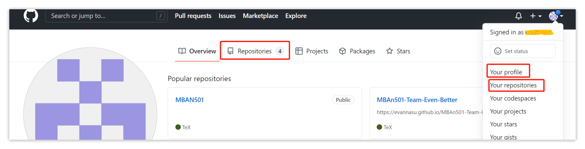
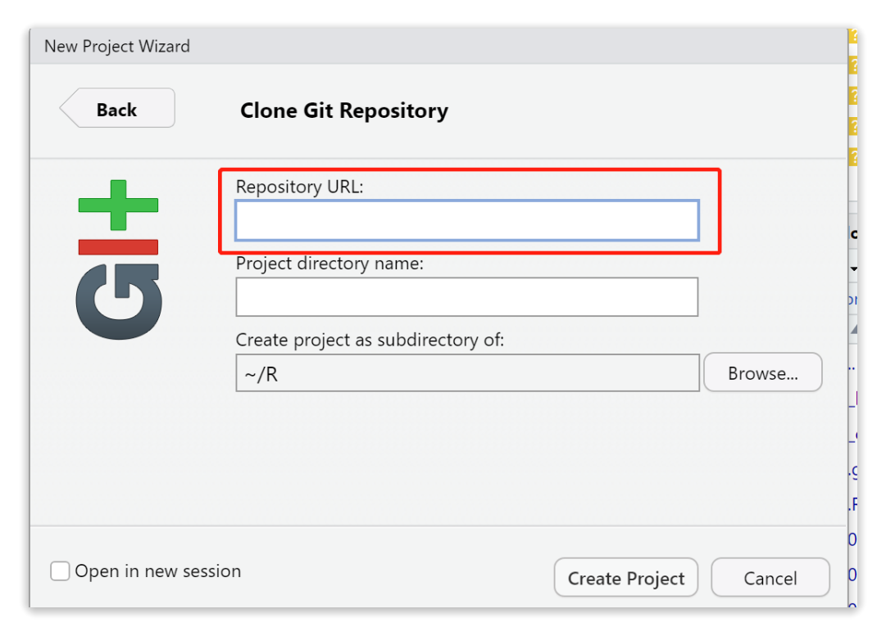
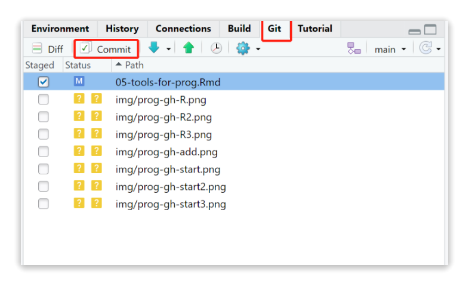
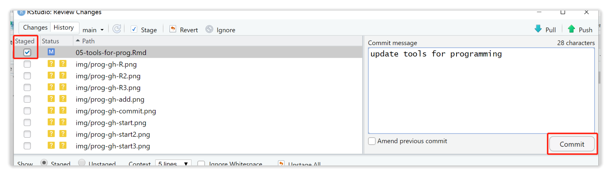
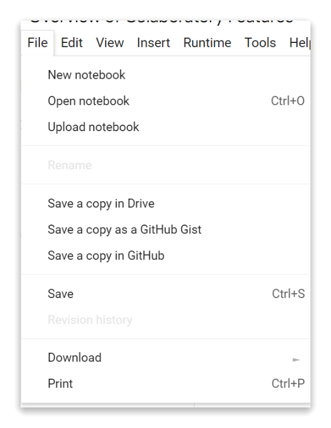

Chapter 6 Tools for programming
6.1 Strengths and weaknesses
| Tools | Strengths | Weaknesses |
|---|---|---|
| Github | 1. Easy code hosting and writing. 2. Effective project management and team collaboration. |
1. Difficult to use for beginners. 2. Merge conflicts sometimes occur. |
| Colab | 1. No setup, easy to write and execute python code. 2. Useful team collaboration and project management tool. Just like collaborating on a Google Docs document, you can co-code with multiple developers using a Google Colab notebook. |
1. Limited space & time with the free version. 2. Only for Python coders. |
6.2 Github
6.2.1 Introduction
GitHub is a platform for hosting, storing, and editing code. It facilitates projects organization and team collaboration. The platform is built around “Repositories” used to organize code for projects.
Here is the official website: https://github.com/.
MBAn students will use Github for team projects in

6.2.2 Main features
- Hold code in repositories
Users use Github to hold and organize projects. All the code and documentation are stored in “Repositories”. There are many tools and features for users to customize their repositories and manage their projects.
| Tools | Details |
|---|---|
| Add collaborators | Developers and project managers can work on projects together in Github using the “Add collaborators” tool. |
| Issue | Developers and project managers can collect user feedbacks and organize tasks using the “issue” feature. They can also use it to priorize issues. |
| Branch | Developers can create a “branch” to work on their changes. Once they’ve finished, they can merge the branch back into the master branch. |
- Version control of Github
Version control of Github tracks what and when each developer changes, and allows users to roll back individual changes without affecting other changes down the timeline.
- Open-source projects resources
GitHub is one of the largest communities for the world’s top developers, where you can find almost anything you want. There are many great, famous open source projects shared on it, and you can use and download them for free while abiding by their Licenses.
- Get help from other developers
Developers can ask and answer questions, share codes using the “discussion” feature. As you share your codes, other developers can participate to help you fix bugs, improve project features and quality.
- Use Github Pages to build your websites
GitHub Pages provides a static web hosting service that fetches HTML, CSS, and JavaScript files directly from repositories on GitHub, then builds and publishes the site.
6.2.3 Tutorial
Step 1: Installation
The first step is to install Git. You can install Git-downloads.
You can also refer to the Installation options to install Git.
Step 2: Start a repository
After you sign in your GitHub account, you can see the “Create a new repository” button in the middle of the home page. Click it, then you can fill up your “Repository name”, description, and complete other settings.
Although “Add a README file” is optional, we recommend you to create one that describes your project briefly to the GitHub users.
Step 3: Add new collaborators
After you create your repository, you can view your repository by clicking the right upper corner of the page to enter “Your repositories”, or to enter “ Your profile” and then “Repositories”.

Then, you can click “Setting” to manage your repository. We recommend you to add all your team members by going to “Collaborators”.
Step 4: Create an R project Then, open your RStudio. Click “File” on the left upper corner of RStudio, then “New Project”.
Choose “Version Control”, then choose “Git”. The next step is to copy the URL link of your repository, and choose the directory of your project.


Then, everything is done! Now, you can see current files in your repository on the right side of your RStudio. You can also add new files, edit current files in your repository.
Step 5: Commit & Push & Pull
After you add or edit files, you have to commit and push your changes to repository. Go to the right upper side of your RStudio and enter “Git”. Then, select files and click “Commit”, and you will need to select files again, input commit messages before you confirm your “Commit”.


Then, click “push” on the right upper corner to push your changes to the repository.
In addition to commit and push, you also need to update changes to your local files by using “Pull”.
6.2.4 More resources
- For more tutorials about GIT Push and Pull, please refer to Git Guides
- For more advanced tutorials about Github, you can refer to GitHub Tutorials, Happy Git
6.3 Google Colab
6.3.1 Introduction
Google Colab is a product from Google Research. It allows anybody to write and execute python code through the browser, and to save notebooks on the cloud. So, you can think of Colab as a Jupyter notebook stored in Google Drive. It requires no set up and has an excellent free version.
Here is the official website: https://colab.research.google.com/
MBAn students will use Google Colab frequently in
6.3.2 Main features
- Enter and execute code or text with cells
A cell is a place where you enter either your code or text to be executed. You can easily add, edit and run cells in a Colab notebook. You can also move a cell by selecting it and clicking Cell Up or Cell Down in the top toolbar.
- Files saved on the Google Drive or GitHub
All of your Google Colab notebooks are saved under your Google Drive account, just like your Google Docs and Google Sheets files. Therefore, you can access your notebooks from any device with your Google account log-in. You can also save it to your GitHub repository. Both options enable you to share your projects easily with other developers.

- Import libraries without installing them
Colab is shipped with several pre-installed data libraries, such as Numpy, Pandas, Matplotlib. It also provides pre-installed machine learning libraries, including TensorFlow, and PyTorch.
Thus, Google Colab is especially well-suited for machine learning and data analysis.
- Automatic completions and exploring code
Colab provides automatic completions to explore attributes of Python objects. It’s very useful when you are not sure about the functions. As an example, first run the following cell to import the pandas module. Then, as we enter “pd.read”, we can see many automatic completions below, and we can use “Tab” to choose the function we want.
- More options for your project management
You can also add a “section header cell” to make your projects easier to read. You can use a “Table of contents” to make your projects more contextualized. Furthermore, you can comment on your code by selecting a cell and clicking the comment button in the toolbar above the top-right corner of the cell.
6.3.3 More resources
For more advanced tutorials about Colab, you can refer to Colab Tutorials